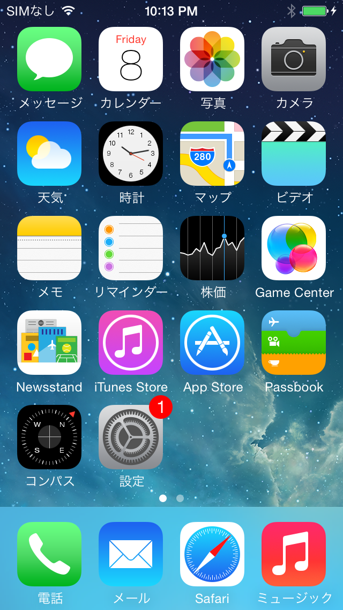

Enabling offline charging on non-Chinese iPhones
2022年7月8日
According to Wikipedia, Occam's razor "is the problem-solving principle that 'entities should not be multiplied beyond necessity'. It is generally understood in the sense that with competing theories or explanations, the simpler one, for example a model with fewer parameters, is to be preferred."
With that being said, after spending way too much time on figuring out how to enable the Chinese exclusive "offline charging" feature, it turns out that the solution couldn't have possibly been more simple and straightforward.
This is only partially a tutorial. If you have access to the tools and cables mentioned in this tutorial, then everything is replicable. However, I will not provide any links, nor will I provide any screenshots of anything except the device. Thank you.
Minor introduction
I picked up a DCSD cable in May of this year to see what I could do with some of my devices. Mainly, I had a slate iPhone 5 that I screen swapped with a white screen taken off an iCloud locked device. I wanted to see if it was possible to modify values in the syscfg to change the dark screen Apple logo to a white screen Apple logo.
After some trial and error, I succeeded (thanks to prior research by dayt0n), but this further intrigued me.
Soon after, the legacyjailbreak legend, dotnick, showed me their Chinese region iPhone 3GS which had an interesting battery charging feature and no WiFi.
This was my new mission: to get offline charging working on a non-Chinese (not CH/A) model iPhone, and I sunk many hours into this, and the solution was stupidly straightforward.
Introduction to Offline Charging
Offline charging, as far as I know, is not the official name for this behaviour, but it describes the ability to charge while a device is powered off. There's not much information online in English as to why Chinese phones exhibit this behaviour, but an archive.org snapshot from February 2015 shows a screenshot of what a device that is charging powered off is supposed to look like.

It likely has something to do with specific Chinese laws that require this feature on all smartphones. I see this feature on Android phones pretty often.
Regardless, this feature has been known to be exclusive to China for a very long time, and not much is known about it, but I discovered a way to get it working on a non-Chinese iPhone... by making the phone think that it is a Chinese iPhone!
Okay, it's easy to argue this isn't a "real" way to get this feature working on a non CH/A iPhone, and you'd be right, but it is pretty neat that it is possible through a little bit of modification, and as far as I know, this might be the first time something like this has been documented...?
Anyways, let's get into how this was done.
Theories
Using Development iBoot and diags, it is possible with a DCSD cable to modify the syscfg partition on the NAND. This means value such as Model, Region, Bootlogo colour and Device colour (often the same value), Serial Number, etc. can be modified without desoldering the NAND of the device.
Region specific software behaviour such as the Camera shutter being always enabled in Japan (and South Korean, if I remember correct) are also found on the syscfg, secifically under the varible SwBh, which is relevent to this tutorial.
I got my hands on a syscfg of a Chinese iPhone SE, so I flashed the entire syscfg to see what would happen. To my surprise, the device actually displayed the charging battery logo.

Knowing that it was infact possible to get this feature working, I proceeded to swap syscfg values between the Chinese (CH/A) syscfg and my US (LL/A) syscfg in hopes that I could some how trigger the offline charging to appear.
I must have swapped 10-15 syscfg values before I gave up. The exploit isn't always reliable, so constantly resetting DFU took up a very long time. I was about 5 hours into it before I decided to give it some rest.
A couple days later, while discussing with a few other people, it dawned on me that it could be model, region, and SwBh working together that cause the charging to appear, rather than one syscfg variable, so I tested it on my iPhone 5 (N42).
Doing some research shows that China had a special model of iPhone 5, with the "A" number of A1442. A1442 correponds to ME039CH/A and ME040CH/A for the 16GB Slate and Silver variants, respectively.
Modifying syscfg
This iPhone 5 is a US/CDMA 16GB Silver/White iPhone5,2 (MD655LL/A)
Within syscfg, there are two variables required to change model and region, Mod# and Regn respectively. Mod# was set to MD655 which is a Global Silver/Slate 16GB, and Regn was set to LL/A which corresponds to America. For SwBh, American devices are set to read as 11, while Chinese devices are set to read as 141.
I set Mod# to ME040, Regn to CH/A, and set SwBh to read 141, and upon rebooting from diags, I didn't notice anything out of the ordinary.
However, once I powered off the device. It finally appeared. Needless to say, I was thrilled but also relieved that it was finally over.

I tested to see if restoring the device changed anything.
After a reflash, I noticed "WiFi" began to read as "WLAN" system-wide meaning the region succesfully changed to Chinese. The iTunes icon was also missing.

I did eventually change my model and region back to MD655 and LL/A, and set Software Behaviour to read as 11, but it is interesting to see that the very simple changes are required to trigger offline charging.
Hope it helps.
-lychi (2022)